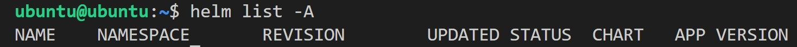

Introduce Kubernetes and Deploy free5GC on Kubernetes with helm
Note
Author: Elisa Lee
Date: 2023/8/16
Abstract
In the initial section of the article, I will provide an introduction to Kubernetes. Moving on to the subsequent part, I will delve into the utilization of Kubernetes for facilitating the deployment of free5GC. Lastly, in the final segment of the article, I will elaborate on the effective utilization of Kubernetes for monitoring services.
Introduce Kubernetes
Do you know why Kubernetes is called k8s?
It's due to a shorthand notation that uses the first letter "k," followed by the number "8," and ending with the last letter "s" to represent the full name.
Kubernetes,stands as an open-source container orchestration platform that bestows organizations with the capacity to adeptly govern, deploy, and expand containerized applications. Initially conceived by Google and presently overseen by the Cloud Native Computing Foundation (CNCF), Kubernetes has ascended to become a pivotal technological underpinning within the realm of contemporary cloud-native computing.
For those who find themselves unacquainted with the intricacies of Kubernetes, let us embark on an exploration of its architectural framework.
I understand that the image presented above might appear intricate at first glance. However, there's no need for concern. Allow me to guide you through each component step by step.
Pods
A "Pod" stands as the most diminutive executable entity within the Kubernetes ecosystem. It possesses the capability to encompass either an individual container or a collective assembly of containers. The subsequent enumeration outlines several salient distinctions that set it apart from the act of directly launching a standalone container.
Notably, a Pod possesses its dedicated network interface, affording all enclosed containers the ability to intercommunicate seamlessly by interfacing with the "localhost." Furthermore, connectivity to other Pods is conveniently established through direct usage of their respective IP addresses within the Kubernetes environment.
The Pod's inherent duplicability and capacity for effortless restarts, even from the point of its most recent execution, distinguish it. Additionally, the versatility of including a functioning container within its initial state further characterizes its nature.
Collectively, these attributes contribute to the refinement and streamlined nature of networking within the Kubernetes ecosystem. Such qualities not only facilitate smoother scalability but also offer enhanced capabilities for restarting services with utmost ease.
Nodes
Consider a "node" as a tangible computing entity akin to a physical machine. Analogous to our personal machines, these nodes possess the capacity to concurrently execute multiple tasks, akin to the pods referenced earlier. The orchestration of nodes is overseen by a pivotal component known as the Kubernetes control plane, which, in an automated fashion, allocates pods across the available nodes. Within each node, a minimum of two services operate in tandem.
-
Kubelet: This crucial service undertakes the responsibility of facilitating seamless communication between the Kubernetes control plane and the individual node. It serves as the intermediary that relays instructions and status updates, ensuring synchronization and cooperation.
-
Container Runtime: Operating in tandem with Kubelet, the container runtime undertakes pivotal functions. These encompass retrieving container images from registries, the unpacking of containers, and the actual execution of applications. A prime example of such a container runtime is Docker, renowned for its role in enabling containerization.
In essence, this intricate interplay of nodes, services, and orchestration elements underscores the dynamism and efficiency inherent to the Kubernetes ecosystem. Through these interlocking mechanisms, the platform optimizes resource utilization, ensures effective communication, and enables the seamless execution of applications across a distributed infrastructure.
Master Nodes
We've now explored all the scalable components and the task runner. Undoubtedly, to orchestrate and oversee everything, a central command hub is necessary – this is referred to as the master node. Although direct intervention within these nodes isn't typically required to ensure the seamless operation of the entire system, it's still beneficial for you to grasp a basic understanding of its functionality.
API server
It determines which interface among all nodes can be externally accessed. Any subsequent commands you execute will be channeled through this service to the designated node or pod. Furthermore, essential cluster information can also be obtained from this service.
Scheduler
Similar to an airport's control tower, its function is akin to orchestrating the deployment of pods on specific nodes based on the rules you've established and the data obtained from the API server. The effectiveness of these rules is pivotal, as they often determine the system's overall efficiency.
Controller Manager
When the need arises to enact concrete modifications on a pod, such as terminating or pausing its operation, a fundamental prerequisite is pinpointing the pod's process location and establishing the means to interact with it. This is precisely the role fulfilled by the controller manager. Additionally, this manager oversees vital components, including accounts, services, and more.
Etcd
For a simplified understanding, we can view this as essentially a comprehensive backup of the entire cluster.
Service
In Kubernetes, a "service" is an abstraction that enables communication between different sets of pods, usually to provide a stable network endpoint for accessing a specific group of pods. Pods in Kubernetes are ephemeral and can be created, terminated, or scaled dynamically, which makes their IP addresses and lifecycles unpredictable. Services provide a way to decouple the frontend of an application from the backend pods, making it easier for other components or users to access the application without having to know the exact locations or IP addresses of the pods.
A service can be defined in Kubernetes using a YAML or JSON configuration file, and it is associated with a set of pods based on a label selector. The service acts as a load balancer, distributing incoming network traffic among the pods that match the specified selector. This distribution ensures that even if pods are scaled up or down, the service remains available and reachable.
There are different types of services in Kubernetes:
-
ClusterIP: This is the default service type, and it exposes the service on a cluster-internal IP address. It is accessible only within the cluster.
-
NodePort: This type exposes the service on each node's IP address at a static port. It allows external access to the service using the node's IP and the specified static port.
-
LoadBalancer: This type automatically provisions a cloud provider load balancer to expose the service externally. It works in environments that support external load balancers.
-
ExternalName: This type provides an alias for an external service by returning a CNAME record with the configured DNS name.
Services are a fundamental concept in Kubernetes and play a crucial role in enabling communication and load balancing between pods and external clients. They provide a stable and abstracted network endpoint that allows applications to scale and be more resilient without disrupting access from users or other components.
In the upcoming section, I will delve into the process of deploying free5GC on Kubernetes.
Deploying 5G core network with free5GC
Now I'm going to introduce how to implement free5GC on Kubernetes with helm
Install require packages
sudo apt update -y
sudo apt upgrade -y
Install apt-transport-https
"apt-transport-https" is a crucial package that equips your system with the essential tools and libraries required to seamlessly integrate the HTTPS protocol. This integration ensures secure and encrypted communication when connecting to package repositories while utilizing the Advanced Package Tool (APT) for effective package management.
sudo apt install -y curl wget apt-transport-https
Install gtp5g
"gtp5g" refers to a customized Linux kernel module specifically designed to handle packets by PFCP (Packet Forwarding Control Protocol) Information Elements (IEs) such as PDR (Packet Detection Rule) and FAR (Forwarding Action Rule). For comprehensive insights, you can delve into the 3GPP specifications TS 29.281 and TS 29.244.
To employ the UPF (User Plane Function) component effectively, it's imperative to operate on either the 5.0.0-23-generic or 5.4.x version of the Linux kernel. This ensures optimal compatibility and seamless integration with the necessary functionalities.
sudo apt install gcc
sudo apt install make
git clone -b v0.8.1 https://github.com/free5gc/gtp5g.git
cd gtp5g
make
sudo make install
Install docker
"docker" is a platform that enables developers to build, package, and distribute applications as containers. Containers are lightweight, portable, and self-sufficient units that encapsulate everything an application needs to run, including the code, runtime, system tools, system libraries, and settings. Docker provides a consistent environment across different development and deployment stages, from local development to testing and production.
for pkg in docker.io docker-doc docker-compose podman-docker containerd runc; do sudo apt-get remove $pkg; done
sudo apt-get update
sudo apt-get install ca-certificates curl gnupg
sudo install -m 0755 -d /etc/apt/keyrings
curl -fsSL https://download.docker.com/linux/ubuntu/gpg | sudo gpg --dearmor -o /etc/apt/keyrings/docker.gpg
sudo chmod a+r /etc/apt/keyrings/docker.gpg
echo \
"deb [arch="$(dpkg --print-architecture)" signed-by=/etc/apt/keyrings/docker.gpg] https://download.docker.com/linux/ubuntu \
"$(. /etc/os-release && echo "$VERSION_CODENAME")" stable" | \
sudo tee /etc/apt/sources.list.d/docker.list > /dev/null
sudo apt-get update
sudo apt-get install docker-ce docker-ce-cli containerd.io docker-buildx-plugin docker-compose-plugin
Install minikube
"minikube" is an open-source tool that enables developers to set up and run a single-node Kubernetes cluster locally on their own computer. It's particularly useful for learning, development, and testing purposes. Minikube provides an easy way to experience Kubernetes without needing access to a full-scale cluster, making it a great tool for getting familiar with Kubernetes concepts and features.
wget https://storage.googleapis.com/minikube/releases/latest/minikube-linux-amd64
sudo cp minikube-linux-amd64 /usr/local/bin/minikube
sudo chmod +x /usr/local/bin/minikube
Install kubectl
"kubectl" is the command-line tool used to interact with and manage Kubernetes clusters. It is an essential component for working with Kubernetes, allowing users to perform various tasks and operations on Kubernetes clusters directly from the terminal.
curl -LO https://storage.googleapis.com/kubernetes-release/release/`curl -s https://storage.googleapis.com/kubernetes-release/release/stable.txt`/bin/linux/amd64/kubectl
chmod +x kubectl
sudo mv kubectl /usr/local/bin/
Install helm
"helm" is a package manager for Kubernetes that simplifies the deployment and management of applications and services on a Kubernetes cluster. It allows you to define, install, and upgrade complex applications using pre-configured templates called "charts." These charts encapsulate all the necessary resources, configurations, and dependencies required to run an application.
curl -fsSL -o get_helm.sh https://raw.githubusercontent.com/helm/helm/master/scripts/get-helm-3
chmod 700 get_helm.sh
./get_helm.sh
helm list -A

Install multus-cni
"multus-cni" is a project that provides a Kubernetes network plugin, specifically a "Container Network Interface" (CNI) plugin, which enables the attachment of multiple network interfaces to pods in a Kubernetes cluster.
git clone https://github.com/k8snetworkplumbingwg/multus-cni.git
Deploy free5GC
Useful kubectl command
Now, I will proceed to introduce a selection of kubectl command that can be employed during the deployment of free5GC.
"kubectl get pods" retrieves a list of running pods in the current namespace along with their names, statuses, and other relevant information.
kubectl get pods
"kubectl describe pod" is used to get detailed information about a specific pod, including its status, events, labels, and more.
kubectl describe pod [pod-name]
"kubectl logs" fetches the logs of a specific pod, helping you troubleshoot issues and monitor application output.
kubectl logs [pod-name]
"kubectl exec -it" allows you to execute a command inside a running pod. The
-it flag enables interactive terminal access.kubectl exec -it [pod-name] -- [command]
"kubectl apply -f " deploys resources defined in a YAML file, such as pods, services, or deployments, to your cluster.
kubectl apply -f [yaml-file]
"kubectl delete" deletes a specific resource by specifying its type and name, freeing up resources and cleaning the cluster.
kubectl delete [resource-type] [resource-name]
"kubectl expose deployment" creates a new service, typically of type LoadBalancer, to expose a deployment's pods to external network traffic.
kubectl expose deployment [deployment-name] --type=LoadBalancer --port=[port]
"kubectl get services" lists all services running in the current namespace along with their details, including ClusterIP, external IP (if applicable), and ports.
kubectl get services
"kubectl get nodes" retrieves information about the worker nodes in the cluster, displaying their statuses, roles, and other essential data.
kubectl get nodes
"kubectl describe node" provides detailed information about a specific node, including its capacity, allocated resources, and conditions.
kubectl describe node [node-name]
"kubectl get namespaces" displays all available namespaces in the cluster, which are used to isolate resources and manage multi-tenancy.
kubectl get namespaces
"kubectl create namespace" creates a new namespace, allowing you to logically separate and organize resources.
kubectl create namespace [namespace-name]
"kubectl port-forward" enables you to create a network tunnel between your local machine and a specific pod running within a Kubernetes cluster. This allows you to access services or applications running inside the pod as if they were running on your local machine. The command forwards traffic from a specified local port to a port on the selected pod.
kubectl port-forward [pod-name] [local-port]:[remote-port]
Start minikube
Use flannel as cni plugin to start minikue. Flannel is a popular "Container Network Interface" (CNI) plugin used for networking in Kubernetes and other container orchestration platforms. It provides a simple and lightweight network fabric designed to facilitate communication between containers and pods in a distributed environment, such as a Kubernetes cluster.
sudo usermod -aG docker $USER && newgrp docker
minikube start --driver=docker --cpus=4 --memory=8g --disk-size=20g --cni=flannel
## verify minikube installation
minikube status
Enable Multus-CNI Plugin
cd multus-cni
cat ./deployments/multus-daemonset.yml | kubectl apply -f -
Install free5GC and UERANSIM
If you have only one interface on each Kubernetes node and its name is toto. Then you have to set these parameters to toto:
global.n2network.masterIf
global.n3network.masterIf
global.n4network.masterIf
global.n6network.masterIf
global.n9network.masterIf
kubectl create ns free5gc
git clone https://github.com/Orange-OpenSource/towards5gs-helm.git
cd towards5gs-helm/charts/
helm -n free5gc install free5gc-v1 ./free5gc/
helm -n free5gc install ueransim-v1 ./ueransim/
watch kubectl get pods -n free5gc
Start WebConsole
free5GC offers a user-friendly web tool called WebConsole, designed to facilitate the creation and management of User Equipment (UE) registrations. This tool serves as a valuable resource for multiple 5G network functions (NFs), streamlining the process of handling UE registrations and associated tasks.
kubectl port-forward --namespace free5gc svc/webui-service 5000:5000
Execute the following command in your local machine's terminal, and subsequently, you will be able to access the WebConsole via localhost:5000.
You can login with username
admin and password free5gc.ssh -L localhost:5000:localhost:5000 ubuntu@[VM ip]

Service Monitoring
install Prometheus/Grafana services
For monitoring Kubernetes, I utilized Prometheus and Grafana. The installation of Prometheus and Grafana services is facilitated through the Helm chart provided by the prometheus-community.
helm repo add prometheus-community https://prometheus-community.github.io/helm-charts
helm repo update
kubectl create namespace prometheus
helm install prometheus prometheus-community/kube-prometheus-stack -n prometheus
watch kubectl get pods -n prometheus
kubectl port-forward -n prometheus svc/prometheus-grafana 8080:80
Execute the following command in your local machine's terminal, and subsequently, you will be able to access the WebConsole via localhost:8080.
ssh -L localhost:8080:localhost:8080 ubuntu@[VM ip]
A variety of dashboards are available, offering different perspectives for those who are interested. Below is a snapshot of one such dashboard option.
Reference
https://free5gc.org/
https://medium.com/rahasak/deploying-5g-core-network-with-free5gc-kubernets-and-helm-charts-29741cea3922
https://github.com/Orange-OpenSource/towards5gs-helm
https://github.com/k8snetworkplumbingwg/multus-cni
About
Hello, I am Elisa Lee. My ongoing research revolves around VoNR (Voice over New Radio). I encourage any inquiries or identification of errors within the article, as they are welcomed for correction. Your feedback is invaluable, so please don't hesitate to reach out via email to share your insights.